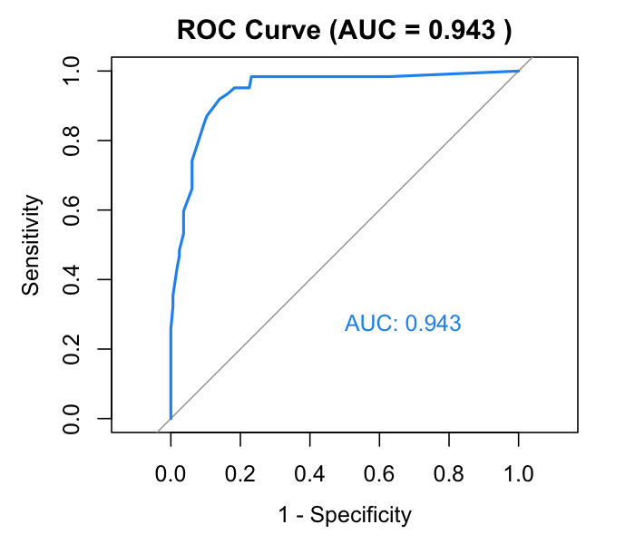
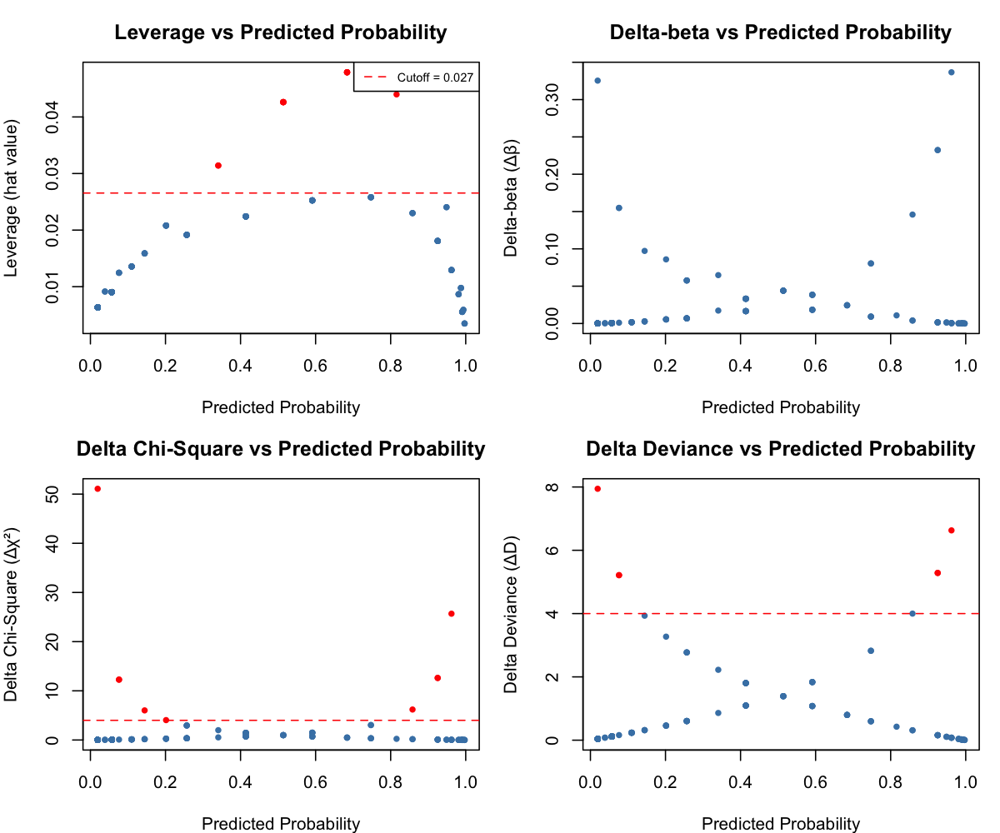
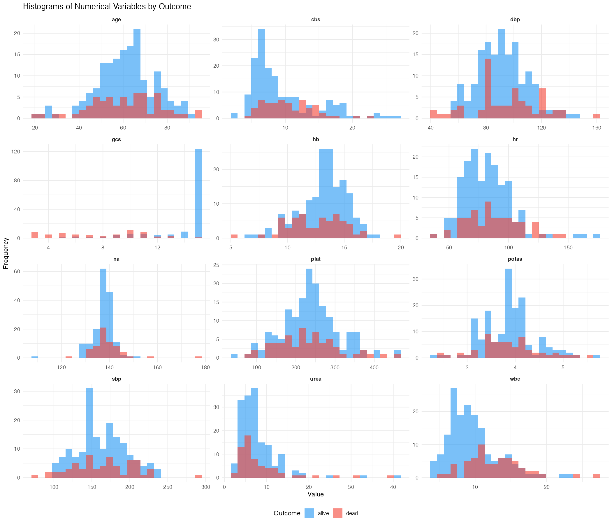
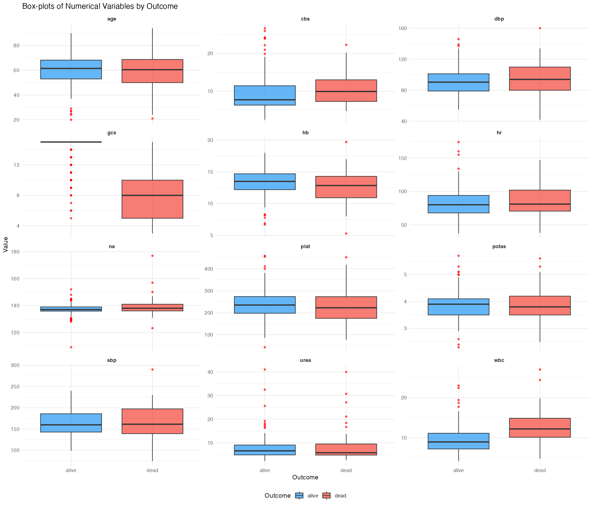
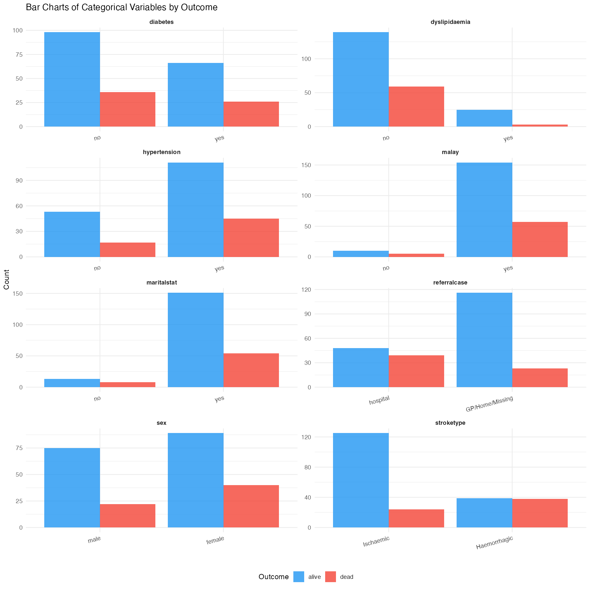

Investigation of Clinical and Demographic Predictors of In-Hospital Stroke Mortality
Primary Finding: Glasgow Coma Scale (gcs) and patient sex (sex) are the two primary independent determinants of stroke fatality at discharge following stepwise likelihood ratio selection.
Summary of log-odds (β), crude and adjusted odds ratios (OR / AOR), 95% confidence intervals, and p-values for all independent predictors.
| Logistic Regression Analysis of Stroke Fatality | ||||||||
| Univariable and Multivariable Results | ||||||||
| Variable |
Univariable
|
Multivariable
|
||||||
|---|---|---|---|---|---|---|---|---|
| Log-odds (β) | OR | 95% CI | p-value | Log-odds (β) | OR | 95% CI | p-value | |
| sex | 0.427 | 1.532 | 0.844 – 2.836 | 0.166 | -1.119 | 0.327 | 0.103 – 0.927 | 0.044 |
| gcs | -0.634 | 0.530 | 0.444 – 0.614 | <0.001 | -0.716 | 0.489 | 0.392 – 0.583 | <0.001 |
| sbp | 0.001 | 1.001 | 0.992 – 1.010 | 0.827 | — | — | — | — |
| dbp | 0.006 | 1.006 | 0.991 – 1.021 | 0.429 | — | — | — | — |
| hr | 0.013 | 1.013 | 0.999 – 1.027 | 0.061 | — | — | — | — |
| hb | -0.123 | 0.884 | 0.773 – 1.008 | 0.067 | — | — | — | — |
| plat | -0.001 | 0.999 | 0.995 – 1.003 | 0.519 | — | — | — | — |
| wbc | 0.215 | 1.240 | 1.141 – 1.359 | <0.001 | — | — | — | — |
| na | 0.072 | 1.075 | 1.013 – 1.152 | 0.027 | — | — | — | — |
| potas | -0.053 | 0.949 | 0.563 – 1.587 | 0.842 | — | — | — | — |
| cbs | 0.038 | 1.039 | 0.978 – 1.102 | 0.207 | — | — | — | — |
| urea | 0.020 | 1.020 | 0.967 – 1.073 | 0.437 | — | — | — | — |
| age | -0.003 | 0.997 | 0.977 – 1.019 | 0.797 | — | — | — | — |
| hypertension | 0.234 | 1.264 | 0.671 – 2.460 | 0.478 | — | — | — | — |
| maritalstat | -0.543 | 0.581 | 0.232 – 1.539 | 0.255 | — | — | — | — |
| malay | -0.301 | 0.740 | 0.252 – 2.461 | 0.597 | — | — | — | — |
| diabetes | 0.070 | 1.072 | 0.589 – 1.936 | 0.817 | — | — | — | — |
| dyslipidaemia | -1.263 | 0.283 | 0.066 – 0.846 | 0.045 | — | — | — | — |
| referralcase | -1.410 | 0.244 | 0.130 – 0.448 | <0.001 | — | — | — | — |
| stroketype | 1.624 | 5.075 | 2.740 – 9.595 | <0.001 | — | — | — | — |
| OR = Odds Ratio; CI = Confidence Interval; β = log-odds coefficient | ||||||||
| Multivariable model variables selected via forward LR stepwise (p < 0.25 from univariable) | ||||||||
| Model Fitness Summary | ||
| Metric | Value | Interpretation |
|---|---|---|
| AUC | 0.9434 | Excellent |
| AUC 95% CI | 0.9099 – 0.9769 | |
| Hosmer-Lemeshow χ² | 7.8031 | |
| Hosmer-Lemeshow p-value | 0.0991 | Model fits adequately |
| Accuracy | 88.5% | |
| Sensitivity | 74.2% | |
| Specificity | 93.9% | |
| Null Deviance | 265.56 | |
| Residual Deviance | 124.95 | |
| AIC | 130.95 | |





| Variable | Overall N = 2261 |
Outcome
|
p-value2 | |
|---|---|---|---|---|
| alive N = 1641 |
dead N = 621 |
|||
| Sex | 0.2 | |||
| male | 97 (42.9%) | 75 (45.7%) | 22 (35.5%) | |
| female | 129 (57.1%) | 89 (54.3%) | 40 (64.5%) | |
| GCS (Glasgow Coma Scale) | 12.31 (3.73) | 14.03 (2.11) | 7.77 (3.24) | <0.001 |
| Systolic BP (mmHg) | 163.22 (34.34) | 162.91 (31.92) | 164.03 (40.31) | 0.8 |
| Diastolic BP (mmHg) | 92.00 (20.01) | 91.35 (17.95) | 93.71 (24.73) | 0.4 |
| Heart Rate (bpm) | 83.04 (21.18) | 81.40 (20.43) | 87.39 (22.65) | 0.055 |
| Hemoglobin (g/dL) | 13.09 (2.21) | 13.25 (2.08) | 12.65 (2.49) | 0.061 |
| Platelet (×10⁹/L) | 235.66 (73.90) | 237.61 (72.11) | 230.52 (78.83) | 0.4 |
| WBC (×10⁹/L) | 10.46 (3.84) | 9.62 (3.43) | 12.68 (4.02) | <0.001 |
| Sodium (mmol/L) | 137.73 (5.23) | 137.22 (4.27) | 139.09 (7.02) | 0.2 |
| Potassium (mmol/L) | 3.87 (0.57) | 3.87 (0.54) | 3.85 (0.65) | 0.7 |
| Capillary Blood Sugar (mmol/L) | 9.85 (4.77) | 9.61 (5.06) | 10.51 (3.84) | 0.008 |
| Urea (mmol/L) | 7.89 (5.45) | 7.72 (4.88) | 8.35 (6.77) | 0.7 |
| Age (years) | 60.82 (13.97) | 60.97 (13.27) | 60.44 (15.78) | 0.8 |
| Hypertension | 156 (69.0%) | 111 (67.7%) | 45 (72.6%) | 0.5 |
| Married | 205 (90.7%) | 151 (92.1%) | 54 (87.1%) | 0.3 |
| Malay ethnicity | 211 (93.4%) | 154 (93.9%) | 57 (91.9%) | 0.6 |
| Diabetes | 92 (40.7%) | 66 (40.2%) | 26 (41.9%) | 0.8 |
| Dyslipidaemia | 28 (12.4%) | 25 (15.2%) | 3 (4.8%) | 0.034 |
| Referral source | <0.001 | |||
| hospital | 87 (38.5%) | 48 (29.3%) | 39 (62.9%) | |
| GP/Home/Missing | 139 (61.5%) | 116 (70.7%) | 23 (37.1%) | |
| Stroke type | <0.001 | |||
| Ischaemic | 149 (65.9%) | 125 (76.2%) | 24 (38.7%) | |
| Haemorrhagic | 77 (34.1%) | 39 (23.8%) | 38 (61.3%) | |
| 1 n (%); Mean (SD) | ||||
| 2 Pearson’s Chi-squared test; Wilcoxon rank sum test; Fisher’s exact test | ||||
| Characteristic | N | OR | 95% CI | p-value |
|---|---|---|---|---|
| sex | 226 | |||
| male | — | — | ||
| female | 1.53 | 0.84, 2.84 | 0.2 | |
| gcs | 226 | 0.53 | 0.44, 0.61 | <0.001 |
| sbp | 226 | 1.00 | 0.99, 1.01 | 0.8 |
| dbp | 226 | 1.01 | 0.99, 1.02 | 0.4 |
| hr | 226 | 1.01 | 1.00, 1.03 | 0.061 |
| hb | 226 | 0.88 | 0.77, 1.01 | 0.067 |
| plat | 226 | 1.00 | 1.0, 1.00 | 0.5 |
| wbc | 226 | 1.24 | 1.14, 1.36 | <0.001 |
| na | 226 | 1.07 | 1.01, 1.15 | 0.027 |
| potas | 226 | 0.95 | 0.56, 1.59 | 0.8 |
| cbs | 226 | 1.04 | 0.98, 1.10 | 0.2 |
| urea | 226 | 1.02 | 0.97, 1.07 | 0.4 |
| age | 226 | 1.00 | 0.98, 1.02 | 0.8 |
| hypertension | 226 | |||
| no | — | — | ||
| yes | 1.26 | 0.67, 2.46 | 0.5 | |
| maritalstat | 226 | |||
| no | — | — | ||
| yes | 0.58 | 0.23, 1.54 | 0.3 | |
| malay | 226 | |||
| no | — | — | ||
| yes | 0.74 | 0.25, 2.46 | 0.6 | |
| diabetes | 226 | |||
| no | — | — | ||
| yes | 1.07 | 0.59, 1.94 | 0.8 | |
| dyslipidaemia | 226 | |||
| no | — | — | ||
| yes | 0.28 | 0.07, 0.85 | 0.045 | |
| referralcase | 226 | |||
| hospital | — | — | ||
| GP/Home/Missing | 0.24 | 0.13, 0.45 | <0.001 | |
| stroketype | 226 | |||
| Ischaemic | — | — | ||
| Haemorrhagic | 5.07 | 2.74, 9.59 | <0.001 | |
| Abbreviations: CI = Confidence Interval, OR = Odds Ratio | ||||
| Characteristic | OR | 95% CI | p-value |
|---|---|---|---|
| gcs | 0.49 | 0.39, 0.58 | <0.001 |
| sex | |||
| male | — | — | |
| female | 0.33 | 0.10, 0.93 | 0.044 |
| Abbreviations: CI = Confidence Interval, OR = Odds Ratio | |||